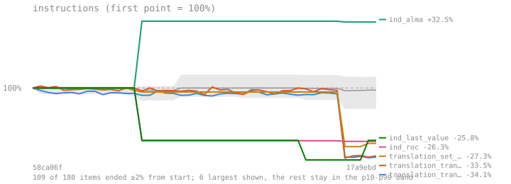
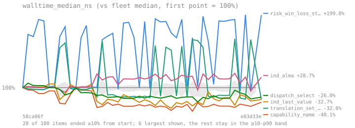
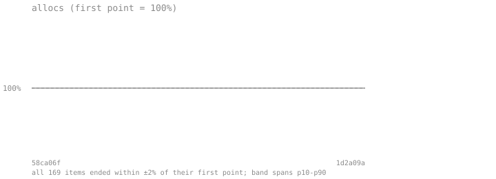

Performance summary#
Generated by
cargo soothfast report
| item | instructions | median | p99 | allocs | polls |
|---|---|---|---|---|---|
finance_query::bt_atr_sizing | 621481 | 67.32µs | 68.76µs | 164 | n/a |
finance_query::bt_base_to_htf_index | 321073 | 27.30µs | 30.25µs | 1 | n/a |
finance_query::bt_bayesian_search | 25957295 | 2.70ms | 2.75ms | 2382 | n/a |
finance_query::bt_fractional_kelly_sizing | 461477 | 44.92µs | 46.28µs | 88 | n/a |
finance_query::bt_grid_pareto | 12896713 | 648.15µs | 759.59µs | 2966 | n/a |
finance_query::bt_grid_search | 12940879 | 651.85µs | 741.05µs | 3012 | n/a |
finance_query::bt_leveraged_margin | 585836 | 55.42µs | 56.54µs | 158 | n/a |
finance_query::bt_monte_carlo | 1066525 | 175.81µs | 181.20µs | 6 | n/a |
finance_query::bt_resample | 1437804 | 109.17µs | 114.20µs | 11 | n/a |
finance_query::bt_sma_crossover | 9493851 | 942.67µs | 973.02µs | 2373 | n/a |
finance_query::bt_strategy_builder | 1055194 | 167.87µs | 198.00µs | 328 | n/a |
finance_query::capability_name | 26 | 1.9ns | 2.6ns | 0 | n/a |
finance_query::cond_bench_always_false | 247997 | 19.73µs | 19.89µs | 6 | n/a |
finance_query::cond_bench_always_true | 4046908 | 379.41µs | 398.28µs | 4045 | n/a |
finance_query::cond_bench_has_position | 4035927 | 380.58µs | 388.01µs | 4045 | n/a |
finance_query::cond_bench_held_for_bars | 1547675 | 154.12µs | 156.03µs | 1041 | n/a |
finance_query::cond_bench_in_loss | 4323977 | 392.12µs | 401.56µs | 4045 | n/a |
finance_query::cond_bench_in_profit | 544124 | 48.09µs | 48.91µs | 142 | n/a |
finance_query::cond_bench_is_long | 4276936 | 385.04µs | 388.16µs | 4045 | n/a |
finance_query::cond_bench_is_short | 395446 | 34.46µs | 35.63µs | 13 | n/a |
finance_query::cond_bench_no_position | 395446 | 34.45µs | 34.90µs | 13 | n/a |
finance_query::cond_bench_stop_loss | 448882 | 41.77µs | 43.68µs | 24 | n/a |
finance_query::cond_bench_take_profit | 437368 | 39.98µs | 41.09µs | 13 | n/a |
finance_query::cond_bench_trailing_stop | 585392 | 51.96µs | 52.45µs | 92 | n/a |
finance_query::cond_bench_trailing_take_profit | 584701 | 55.34µs | 56.22µs | 72 | n/a |
finance_query::de_chart | 106301 | 8.59µs | 8.78µs | 13 | n/a |
finance_query::de_crypto_coins | 333263 | 30.37µs | 30.66µs | 205 | n/a |
finance_query::de_currencies | 570830 | 47.41µs | 60.57µs | 647 | n/a |
finance_query::de_edgar_facts | 13405179 | 1.17ms | 1.19ms | 11899 | n/a |
finance_query::de_edgar_submissions | 5082115 | 402.08µs | 416.86µs | 6784 | n/a |
finance_query::de_fear_and_greed | 1394 | 107.8ns | 110.1ns | 0 | n/a |
finance_query::de_fear_and_greed_crypto_history | 15256 | 1.26µs | 1.27µs | 3 | n/a |
finance_query::de_financials | 222006 | 20.81µs | 21.07µs | 206 | n/a |
finance_query::de_fred_series | 1204753 | 98.84µs | 102.18µs | 873 | n/a |
finance_query::de_hours | 6538 | 586.4ns | 596.3ns | 10 | n/a |
finance_query::de_market_summary | 246103 | 25.83µs | 26.35µs | 228 | n/a |
finance_query::de_news | 36509 | 3.14µs | 3.18µs | 53 | n/a |
finance_query::de_options | 12324 | 1.03µs | 1.05µs | 6 | n/a |
finance_query::de_quote | 9199501 | 889.81µs | 918.60µs | 8235 | n/a |
finance_query::de_screener | 3852651 | 391.02µs | 406.29µs | 4498 | n/a |
finance_query::de_search | 51247 | 4.58µs | 4.75µs | 55 | n/a |
finance_query::de_treasury_yields | 763414 | 71.86µs | 72.29µs | 119 | n/a |
finance_query::de_trending | 14752 | 1.21µs | 1.24µs | 24 | n/a |
finance_query::dispatch_select | 71 | 3.4ns | 3.7ns | 0 | n/a |
finance_query::ind_accumulation_distribution | 27603 | 3.96µs | 4.01µs | 1 | n/a |
finance_query::ind_alma | 107543 | 6.43µs | 6.54µs | 2 | n/a |
finance_query::ind_aroon | 185005 | 12.90µs | 13.09µs | 9 | n/a |
finance_query::ind_atr | 56336 | 9.98µs | 11.24µs | 2 | n/a |
finance_query::ind_awesome_oscillator | 52217 | 8.55µs | 8.66µs | 4 | n/a |
finance_query::ind_balance_of_power | 27200 | 2.33µs | 2.48µs | 2 | n/a |
finance_query::ind_bull_bear_power | 29367 | 7.02µs | 7.12µs | 3 | n/a |
finance_query::ind_cci | 149062 | 17.28µs | 17.34µs | 2 | n/a |
finance_query::ind_chaikin_oscillator | 66624 | 16.13µs | 16.23µs | 4 | n/a |
finance_query::ind_choppiness_index | 272736 | 23.29µs | 23.85µs | 8 | n/a |
finance_query::ind_cmf | 49272 | 4.07µs | 4.12µs | 2 | n/a |
finance_query::ind_cmo | 61600 | 5.12µs | 5.14µs | 2 | n/a |
finance_query::ind_coppock_curve | 72521 | 7.65µs | 7.69µs | 3 | n/a |
finance_query::ind_dema | 40723 | 11.83µs | 11.92µs | 3 | n/a |
finance_query::ind_donchian_channels | 181300 | 12.23µs | 12.52µs | 9 | n/a |
finance_query::ind_elder_ray | 29368 | 7.02µs | 7.09µs | 3 | n/a |
finance_query::ind_fibonacci_pivot_points | 24494 | 2.39µs | 2.44µs | 1 | n/a |
finance_query::ind_fibonacci_retracement | 184691 | 12.24µs | 12.54µs | 9 | n/a |
finance_query::ind_heikin_ashi | 129126 | 16.72µs | 17.01µs | 9 | n/a |
finance_query::ind_hma | 99924 | 13.19µs | 13.27µs | 5 | n/a |
finance_query::ind_ichimoku | 532356 | 37.38µs | 39.46µs | 27 | n/a |
finance_query::ind_keltner_channels | 97155 | 17.72µs | 17.81µs | 5 | n/a |
finance_query::ind_last_value | 23 | 2.8ns | 3.4ns | 0 | n/a |
finance_query::ind_macd | 82093 | 20.30µs | 24.07µs | 7 | n/a |
finance_query::ind_mcginley_dynamic | 21645 | 12.02µs | 12.12µs | 1 | n/a |
finance_query::ind_mfi | 94016 | 7.64µs | 7.72µs | 3 | n/a |
finance_query::ind_momentum | 1182568 | 124.20µs | 130.10µs | 52 | n/a |
finance_query::ind_momentum_single | 7951 | 522.0ns | 530.7ns | 1 | n/a |
finance_query::ind_moving_averages | 477330 | 85.66µs | 87.28µs | 27 | n/a |
finance_query::ind_parabolic_sar | 25063 | 2.20µs | 2.23µs | 1 | n/a |
finance_query::ind_patterns | 1184420 | 98.28µs | 102.60µs | 1 | n/a |
finance_query::ind_pivot_points | 25989 | 2.84µs | 2.90µs | 1 | n/a |
finance_query::ind_roc | 16807 | 1.62µs | 1.62µs | 1 | n/a |
finance_query::ind_sma | 2200241 | 376.41µs | 379.92µs | 1 | n/a |
finance_query::ind_stochastic | 225478 | 16.73µs | 17.49µs | 11 | n/a |
finance_query::ind_stochastic_rsi | 287005 | 27.21µs | 27.56µs | 12 | n/a |
finance_query::ind_supertrend | 117648 | 13.72µs | 13.78µs | 4 | n/a |
finance_query::ind_tema | 57797 | 17.51µs | 17.65µs | 4 | n/a |
finance_query::ind_trend | 1029967 | 95.44µs | 100.56µs | 48 | n/a |
finance_query::ind_true_range | 17022 | 1.18µs | 1.24µs | 1 | n/a |
finance_query::ind_volatility | 664914 | 68.88µs | 70.45µs | 28 | n/a |
finance_query::ind_volume | 315416 | 42.11µs | 47.14µs | 14 | n/a |
finance_query::ind_vwap | 31602 | 4.05µs | 4.07µs | 1 | n/a |
finance_query::ind_vwma | 43549 | 2.95µs | 3.01µs | 1 | n/a |
finance_query::ind_williams_r | 180059 | 11.36µs | 11.69µs | 7 | n/a |
finance_query::ind_wma | 30722 | 4.23µs | 4.26µs | 7 | n/a |
finance_query::ind_zigzag | 18068 | 1.59µs | 1.62µs | 4 | n/a |
finance_query::ref_bench_accumulation_distribution | 572251 | 50.84µs | 52.49µs | 23 | n/a |
finance_query::ref_bench_adx | 5176046 | 480.88µs | 489.84µs | 4930 | n/a |
finance_query::ref_bench_alma | 5728217 | 538.73µs | 549.82µs | 5019 | n/a |
finance_query::ref_bench_aroon | 5576084 | 492.51µs | 501.51µs | 4950 | n/a |
finance_query::ref_bench_atr | 5448504 | 484.17µs | 529.14µs | 4996 | n/a |
finance_query::ref_bench_awesome_oscillator | 3217496 | 299.04µs | 314.48µs | 2636 | n/a |
finance_query::ref_bench_balance_of_power | 572830 | 51.35µs | 53.82µs | 25 | n/a |
finance_query::ref_bench_bear_power | 1488584 | 140.72µs | 147.68µs | 806 | n/a |
finance_query::ref_bench_bollinger | 5765323 | 531.74µs | 537.88µs | 4968 | n/a |
finance_query::ref_bench_bull_power | 5227390 | 477.63µs | 486.40µs | 4238 | n/a |
finance_query::ref_bench_candle_body | 251985 | 19.71µs | 20.18µs | 6 | n/a |
finance_query::ref_bench_candle_range | 4877408 | 450.99µs | 456.47µs | 5043 | n/a |
finance_query::ref_bench_cci | 3148764 | 298.19µs | 331.44µs | 2605 | n/a |
finance_query::ref_bench_chaikin_oscillator | 641135 | 68.24µs | 71.28µs | 26 | n/a |
finance_query::ref_bench_choppiness_index | 5726159 | 503.38µs | 520.40µs | 5002 | n/a |
finance_query::ref_bench_close | 4866183 | 453.90µs | 458.52µs | 5043 | n/a |
finance_query::ref_bench_cmf | 582995 | 51.72µs | 54.19µs | 25 | n/a |
finance_query::ref_bench_cmo | 3051701 | 285.25µs | 288.59µs | 2598 | n/a |
finance_query::ref_bench_coppock_curve | 3319923 | 308.73µs | 315.93µs | 2559 | n/a |
finance_query::ref_bench_dema | 5278243 | 481.24µs | 506.50µs | 4875 | n/a |
finance_query::ref_bench_donchian | 5959811 | 543.28µs | 584.88µs | 4976 | n/a |
finance_query::ref_bench_elder_bear_power | 1488034 | 140.66µs | 149.06µs | 806 | n/a |
finance_query::ref_bench_elder_bull_power | 5226372 | 461.44µs | 464.90µs | 4238 | n/a |
finance_query::ref_bench_ema | 5374114 | 481.03µs | 487.90µs | 4963 | n/a |
finance_query::ref_bench_gap_pct | 2655636 | 251.88µs | 267.67µs | 2489 | n/a |
finance_query::ref_bench_high | 4867209 | 448.04µs | 453.50µs | 5043 | n/a |
finance_query::ref_bench_hma | 5460259 | 486.69µs | 493.08µs | 4957 | n/a |
finance_query::ref_bench_htf | 6327509 | 589.11µs | 635.85µs | 7039 | n/a |
finance_query::ref_bench_htf_region | 6423841 | 581.64µs | 661.33µs | 7039 | n/a |
finance_query::ref_bench_ichimoku | 6194306 | 575.11µs | 582.14µs | 4836 | n/a |
finance_query::ref_bench_ichimoku_custom | 6194320 | 576.00µs | 622.42µs | 4836 | n/a |
finance_query::ref_bench_is_bearish | 252984 | 19.45µs | 19.69µs | 6 | n/a |
finance_query::ref_bench_is_bullish | 252984 | 19.69µs | 20.75µs | 6 | n/a |
finance_query::ref_bench_keltner | 5981433 | 549.37µs | 555.34µs | 4972 | n/a |
finance_query::ref_bench_low | 5079578 | 452.60µs | 459.54µs | 5043 | n/a |
finance_query::ref_bench_macd | 3222946 | 324.32µs | 343.00µs | 2541 | n/a |
finance_query::ref_bench_mcginley | 5418691 | 487.86µs | 518.43µs | 4963 | n/a |
finance_query::ref_bench_median_price | 4878406 | 449.20µs | 472.66µs | 5043 | n/a |
finance_query::ref_bench_mfi | 5499661 | 487.88µs | 508.97µs | 4998 | n/a |
finance_query::ref_bench_momentum | 2809469 | 285.10µs | 293.16µs | 2552 | n/a |
finance_query::ref_bench_obv | 625073 | 60.42µs | 62.89µs | 30 | n/a |
finance_query::ref_bench_open | 4867181 | 446.49µs | 471.05µs | 5043 | n/a |
finance_query::ref_bench_parabolic_sar | 5918858 | 532.95µs | 539.23µs | 5056 | n/a |
finance_query::ref_bench_price | 4866183 | 454.17µs | 460.58µs | 5043 | n/a |
finance_query::ref_bench_price_change_pct | 2885698 | 277.57µs | 302.59µs | 2489 | n/a |
finance_query::ref_bench_relative_volume | 5718531 | 508.08µs | 511.31µs | 4949 | n/a |
finance_query::ref_bench_roc | 3001693 | 280.09µs | 301.55µs | 2587 | n/a |
finance_query::ref_bench_rsi | 5132165 | 478.59µs | 486.78µs | 4994 | n/a |
finance_query::ref_bench_sma | 5378030 | 477.17µs | 484.73µs | 4963 | n/a |
finance_query::ref_bench_stochastic | 5882023 | 546.45µs | 561.65µs | 4987 | n/a |
finance_query::ref_bench_stochastic_rsi | 6027834 | 547.91µs | 555.75µs | 4831 | n/a |
finance_query::ref_bench_supertrend | 6065255 | 556.04µs | 576.63µs | 5021 | n/a |
finance_query::ref_bench_tema | 5025832 | 477.42µs | 482.48µs | 4781 | n/a |
finance_query::ref_bench_true_range | 5417876 | 488.56µs | 513.61µs | 5059 | n/a |
finance_query::ref_bench_typical_price | 5647805 | 497.92µs | 527.64µs | 5043 | n/a |
finance_query::ref_bench_volume | 4867181 | 450.65µs | 457.74µs | 5043 | n/a |
finance_query::ref_bench_vwap | 5377322 | 482.28µs | 543.00µs | 5060 | n/a |
finance_query::ref_bench_vwma | 5349312 | 481.99µs | 487.45µs | 4964 | n/a |
finance_query::ref_bench_williams_r | 741812 | 60.67µs | 62.73µs | 29 | n/a |
finance_query::ref_bench_wma | 5388304 | 474.30µs | 485.01µs | 4969 | n/a |
finance_query::risk_beta | 270426 | 61.11µs | 65.78µs | 0 | n/a |
finance_query::risk_calmar | 134 | 14.6ns | 14.7ns | 0 | n/a |
finance_query::risk_historical_cvar | 4313779 | 332.03µs | 348.31µs | 2 | n/a |
finance_query::risk_historical_var | 31047639 | 2.47ms | 2.50ms | 2 | n/a |
finance_query::risk_information_ratio | 145835 | 36.13µs | 36.59µs | 1 | n/a |
finance_query::risk_kelly_criterion | 30597 | 3.65µs | 4.08µs | 16 | n/a |
finance_query::risk_max_drawdown | 35063 | 8.21µs | 8.23µs | 1 | n/a |
finance_query::risk_omega_ratio | 143405 | 30.51µs | 30.86µs | 0 | n/a |
finance_query::risk_parametric_cvar | 100419 | 30.55µs | 32.93µs | 0 | n/a |
finance_query::risk_parametric_var | 100415 | 30.54µs | 30.81µs | 0 | n/a |
finance_query::risk_sharpe | 100409 | 30.55µs | 30.83µs | 0 | n/a |
finance_query::risk_sortino | 170039 | 30.55µs | 30.73µs | 0 | n/a |
finance_query::risk_tracking_error | 145832 | 36.17µs | 36.68µs | 1 | n/a |
finance_query::risk_ulcer_index | 619303 | 175.27µs | 177.01µs | 2 | n/a |
finance_query::risk_win_loss_stats | 389593 | 171.47µs | 174.66µs | 25 | n/a |
finance_query::rss_parse | 60878 | 5.68µs | 5.74µs | 48 | n/a |
finance_query::score_news | 854231 | 82.51µs | 88.37µs | 976 | n/a |
finance_query::score_transcript | 44890853 | 4.41ms | 4.52ms | 42100 | n/a |
finance_query::ser_currencies | 201829 | 18.18µs | 18.64µs | 8 | n/a |
finance_query::stream_deserialize | 14034 | 1.11µs | 1.16µs | 4 | n/a |
finance_query::stream_serialize | 11061 | 968.1ns | 1.06µs | 4 | n/a |
finance_query::ticker_chart_then_cached | 10878 | 1.26µs | 1.29µs | 20 | n/a |
finance_query::ticker_quote_polls | 222710 | 6.75µs | 6.80µs | 3 | 1 |
finance_query::ticker_quote_then_cached | 420131 | 10.65µs | 10.78µs | 4 | n/a |
finance_query::tickers_batch_quote_then_cached | 235458 | 9.14µs | 9.50µs | 16 | n/a |
finance_query::translate_dictionary | 15653 | 1.68µs | 1.70µs | 49 | n/a |
finance_query::translation_set_backend | 181 | 14.8ns | 18.9ns | 1 | n/a |
finance_query::translation_translate | 35780 | 2.87µs | 3.06µs | 79 | n/a |
finance_query::translation_translate_with | 35095 | 2.74µs | 2.82µs | 77 | n/a |



built with cargo soothfast docs build
source